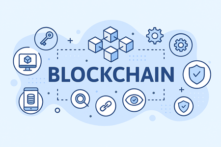
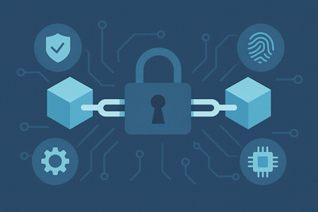
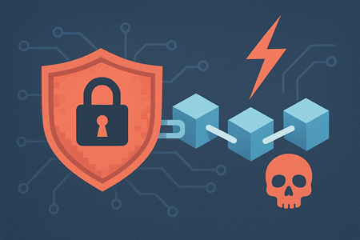
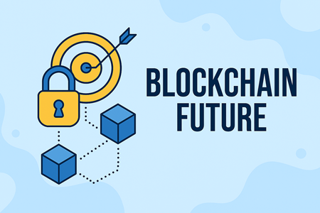

블록체인 보안 기술 개념

블록체인 보안기술은 거래와 데이터의 무결성을 보장하고, 탈중앙화된 네트워크에서 신뢰를 구축하는 핵심 기술입니다.
이를 통해 해킹과 데이터 변조를 방지하며, 투명성과 추적 가능성을 제공합니다.
1. 암호화 기술: 해시 함수와 공개키 암호(PKI)를 사용하여 거래를 보호하고 참여자 신원을 검증합니다.
2. 분산 저장: 중앙 서버 없이 여러 노드에 데이터를 분산 저장하여 단일 실패 지점을 제거합니다.
3. 합의 알고리즘: 작업증명(Proof of Work)이나 지분증명(Proof of Stake)과 같은 합의 메커니즘을 통해 거래의 유효성을 검증합니다.
4. 불변성:블록이 체인 구조로 되어 있어 데이터 위 변조가 사실상 불가능합니다.
5. 데이터 무결성 보장: 블록 간 연결 구조로 변경 시 전체 네트워크가 즉시 탐지할 수 있습니다.
6. 익명성과 프라이버시: 공개 원장 특성에도 불구하고 영지식 증명(ZKP)과 같은 기술로 개인 정보를 보호합니다.
7. 스마트 계약 보안: 자동 실행 프로그램의 취약점을 점검하여 악용을 방지합니다.
블록체인 보안 핵심원리

블록체인 보안 기술의 핵심 원리는 거래와 데이터의 무결성을 보장하고, 네트워크를 안정하게 유지하기 위한 구조적, 암호학적 장치에 있습니다.
1. 변조 불가능한 구조: 블록 단위로 데이터를 저장하고, 각 블록은 이전 블록의 해시 값을 포함하여 체인 형태로 연결됩니다.
이로 인해 한 블록의 데이터가 변경되면 이후 모든 블록의 해시 값이 변경되어 변조가 즉시 탐지됩니다.
2. 분산 저장 방식: 중앙 서버가 아닌 여러 노드에 데이터를 분산 저장하여 단일 실패 지점을 제거하고, 네트워크 전체의 신뢰성을 높입니다.
그래서 단일 장애 지정이 없어 해킹 위험이 낮습니다.
3. 암호화 기술 적용: 해시 함수와 공개키 암호(PKI)를 사용하여 거래를 보호하고 참여자 신원을 검증합니다.
이를 통해 데이터의 기밀성과 무결성을 유지합니다.
4. 합의 알고리즘: 작업증명(Proof of Work)이나 지분증명(Proof of Stake)과 같은 합의 메커니즘을 통해 거래의 유효성을 검증합니다.
이를 통해 악의적인 노드가 네트워크를 장악하는 것을 방지합니다.
5. 익명성과 프라이버시 보호: 공개 원장 특성에도 불구하고 영지식 증명(ZKP)과 같은 기술로 개인 정보를 보호합니다.
이를 통해 사용자의 프라이버시를 유지하면서도 거래의 투명성을 확보합니다.
보안 위협과 한계

[보안 위협]
1. 51% 공격: 네트워크 해시 파워의 과반수를 장악한 공격자가 거래를 조작하거나 이중 지불을 수행할 수 있습니다.
2. 스마트 계약 취약점: 코드의 버그나 취약점을 악용하여 자금을 탈취하거나 계약을 조작할 수 있습니다.
3. 사회공학적 공격: 피싱이나 스피어 피싱을 통해 사용자의 개인 키를 탈취하여 자금을 빼돌릴 수 있습니다.
4. Sybil 공격: 다수의 가짜 신원을 생성하여 네트워크를 혼란시키고 합의 과정을 방해할 수 있습니다.
5. 네트워크 분할 공격: 네트워크를 분할하여 일부 노드가 잘못된 정보를 받도록 유도할 수 있습니다.
[기술적 한계]
1. 확장성 문제: 거래 처리 속도가 느려 대규모 사용자를 지원하는 데 한계가 있습니다.
2. 에너지 소비: 작업증명(Proof of Work) 기반 블록체인은 높은 에너지 소비로 환경에 부정적인 영향을 미칩니다.
3. 규제 불확실성: 각국의 법적 규제가 다르고, 변화하는 규제 환경이 블록체인 기술의 채택을 저해할 수 있습니다.
4. 상호운용성 부족: 다양한 블록체인 네트워크 간의 상호운용성이 부족하여 자산 이동과 데이터 공유에 제약이 있습니다.
[제도적 사회적 한계]
1. 법적 규제 미비: 블록체인과 암호화폐에 대한 명확한 법적 규제가 부족하여 불법 활동에 악용될 수 있습니다.
2. 사용자 인식 부족: 블록체인 기술에 대한 이해 부족으로 인해 채택이 저조하고, 보안 위험에 노출될 수 있습니다.
3. 표준화 부족: 블록체인 기술의 표준화가 이루어지지 않아 상호운용성과 보안성에 문제가 발생할 수 있습니다.
향후 미래 전망

블록체인 보안 기술의 향후 미래 전망은 '신뢰를 기술로 구현하는 인프라'로서 금융, 공공, 산업 전반에 걸쳐 확산되는 방향으로 요약할 수 있습니다.
1. 확장성 향상: 샤딩, 레이어 2 솔루션 등 새로운 기술을 통해 거래 처리 속도와 네트워크 확장성이 개선될 것입니다.
2. 에너지 효율성 개선: 지분증명(Proof of Stake)과 같은 친환경 합의 알고리즘이 채택되어 에너지 소비가 감소할 것입니다.
3. 규제 명확화: 각국 정부가 블록체인과 암호화폐에 대한 명확한 법적 프레임워크를 마련하여 기술 채택이 촉진될 것입니다.
4. 상호운용성 강화: 다양한 블록체인 네트워크 간의 상호운용성을 높이는 프로토콜과 표준이 개발될 것입니다.
5. 보안 기술 발전: 양자 컴퓨팅 대응 암호화, 영지식 증명(ZKP) 등 첨단 보안 기술이 도입되어 블록체인 보안성이 강화될 것입니다.
6. 산업별 맞춤형 솔루션: 금융, 공급망 관리, 헬스케어 등 다양한 산업 분야에 특화된 블록체인 보안 솔루션이 개발될 것입니다.
7. 사용자 교육 및 인식 제고: 블록체인 기술에 대한 교육과 인식 제고 활동이 활발해져 사용자 기반이 확대될 것입니다.